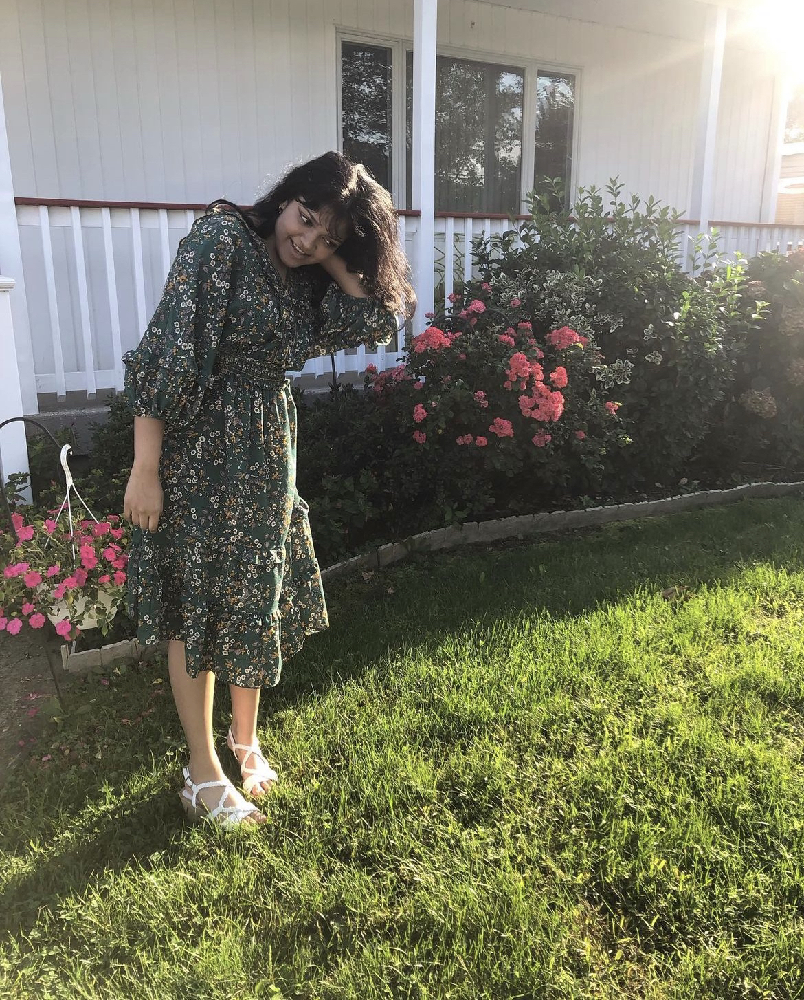

 I’m Adrika, a Bengali American in New York. I’m an incoming college freshman studying Computer Science. I'm excited to learn more about coding and create new projects. I enjoy reading, cooking, and collecting dolls. I’m a coding beginner but I won’t let that discourage me! I plan to keep this website updated as I grow. I hope to see you again soon.